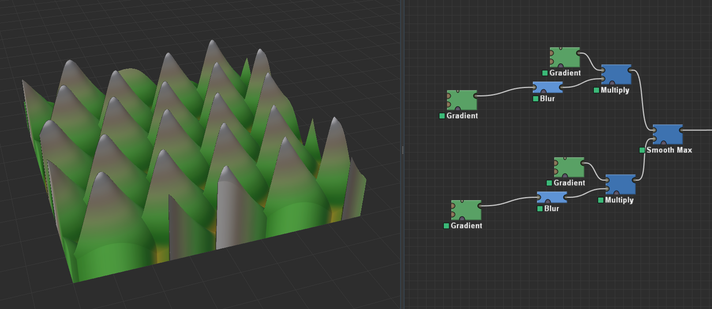
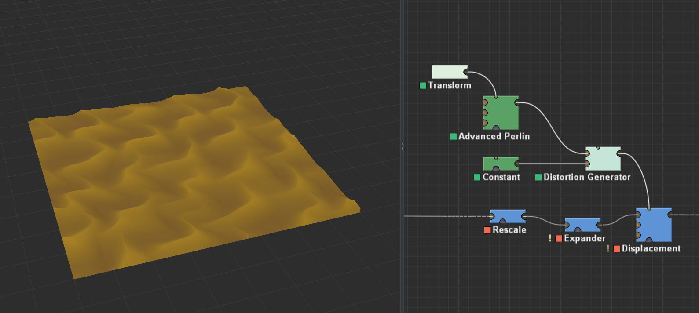
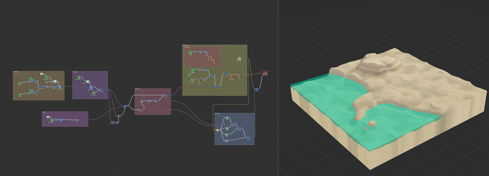

This week, I focused on adding components to the dune landform I assigned for myself. My goal was to
incorporate dunes. I created a texture for the dunes and then applied it to the landform I developed the
previous week.
To create the dunes, I used a specific approach. The default World Machine does not offer a direct method
for generating dunes or the texture of sand. This realisation led me to create my texture to incorporate
into my project.
Within the ‘sand hills’ group, I shaped the actual dunes and added a wavy effect. The first part of the
group involves defining the bumps. This is achieved by utilising a repeating gradient, which is blurred
to soften the edges. Then, I combined it with the same gradient but rotated 45 degrees to create the
points. This process is repeated, but the result is offset, and both layers are combined to achieve the
final effect, as presented in the image below.

After identifying the highest points, I will resize them to the dimensions of the dunes. Next, I will use
an expander to give each mound a curved shape. I will then employ a displacement module to create a
slanted terrain with a flat value, which will help achieve a more undulating effect.

The sand texture I created is quite straightforward. I used an advanced Perlin noise function, which
generates a fine grain, resulting in detailed terrain. I adjusted several parameters to enhance the
appearance, rescaling it to a smaller volume to more closely resemble actual sand. Finally, I combined
this texture to shape the dunes.
After that, I tweaked the values to make them look more realistic, using photos from the internet to get
an idea of what dunes look like. I also added more noise around the bases of the dunes so that when I
created the colour for the terrain, it would give a greater sense of depth.
With this, I was left with the basic shape of the dunes, which I combined with the previous week’s work
on the terrain shape to produce the image below.
